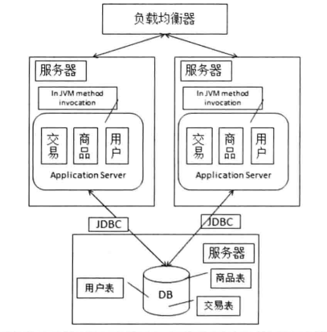
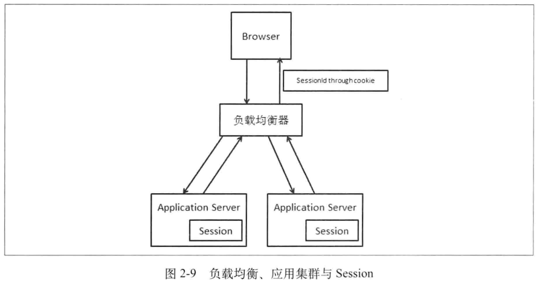

HTTP 协议本身是无状态的，需要基于 HTTP 协议支持会话状态 (Session State) 的机制，而这样的机制应该可以使 Web 服务器从多次单独的 HTTP 请求中看到 “会话”，也就是知道哪些请求来自哪个会话。具体实现: 在会话开始的时候，分配一个唯一的会话标识 (SessionId)，通过 Cookie 把这个标识告诉浏览器，以后每次请求的时候，浏览器都会带上这个会话标识来告诉 Web 服务器请求是属于哪个会话的。如果遇到禁用 Cookie 的情况，一般是把 SessionId 放入 URL 参数中。
当应用服务器由一台变为两台后，遇到的问题是会话数据是需要保存到单机上的，第一次访问网站请求落到哪台服务器，我的 Session 就创建在哪个服务器上:

解决方案: